จงแสดงเลข Floating Point ของ 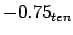 ในรูปแบบของ Single Precision และ Double Precision
แต่ละหลักของเลข Floating Point มีค่าดังต่อไปนี้
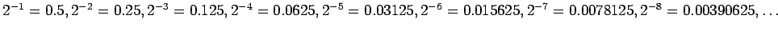
เลข Floating Point สามารถแสดงได้เป็น 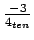 หรือ 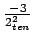
โดยสามารถแสดงได้เป็น
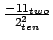 หรือ 
ใน Scientific Notation สามารถเขียนได้เป็น 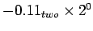
ทำการ Normalized จะได้ 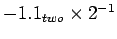
ในเลข Floating Point แบบ Single Precision สามารถแสดงโดย
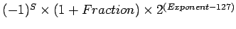
เมื่อทำการลบค่า Bias จาก Exponent ของ จะได้เท่ากับ
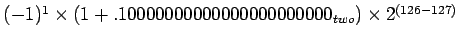
เลข Floating Point ในรูปของไบนารี่จะได้
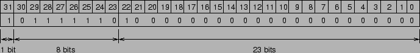
ส่วนของ Double Precision จะได้
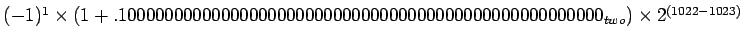
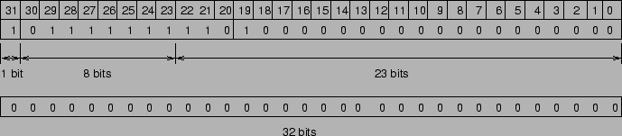